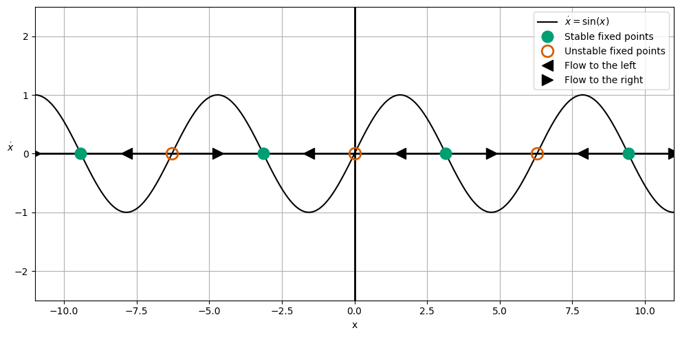
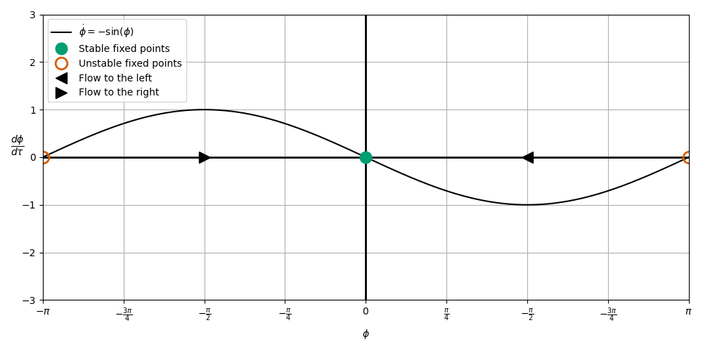
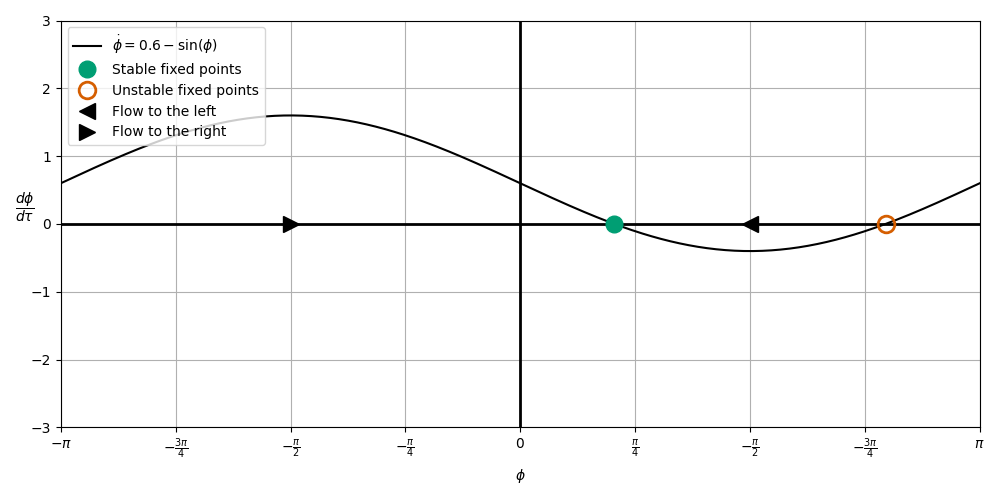
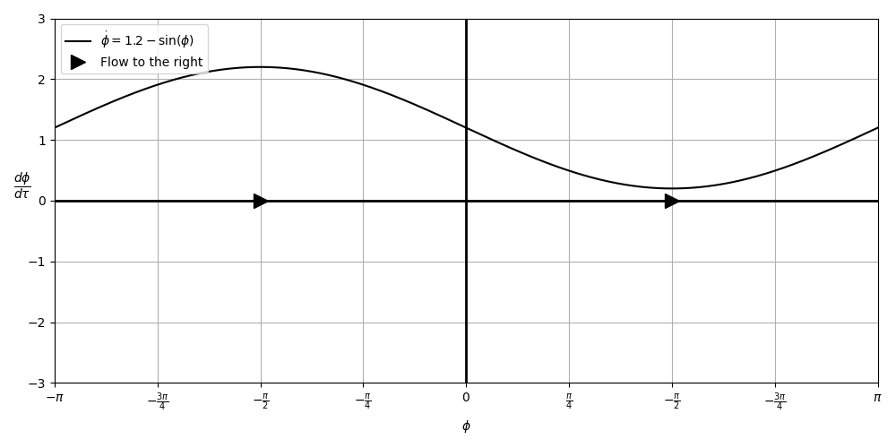
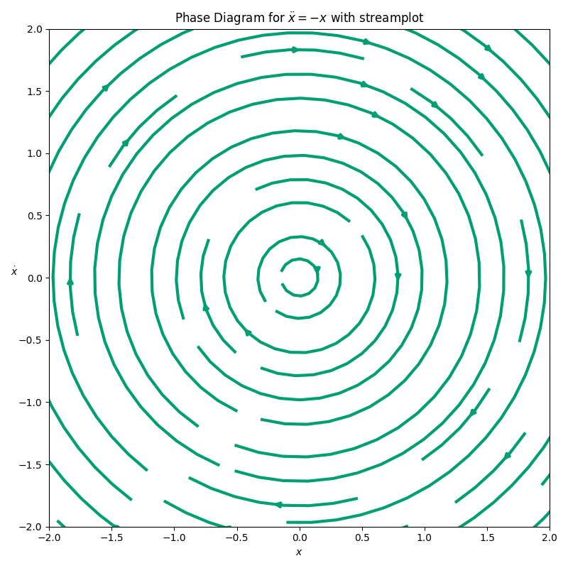
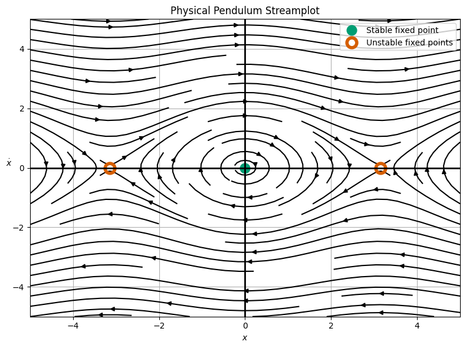
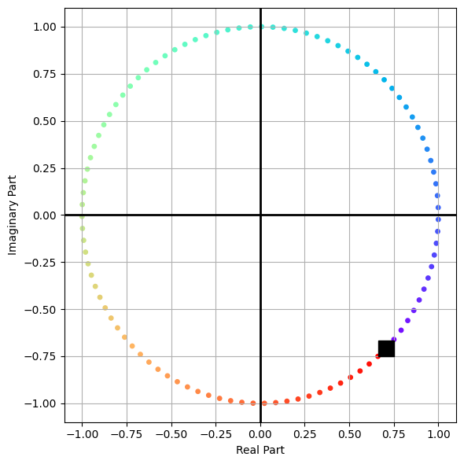
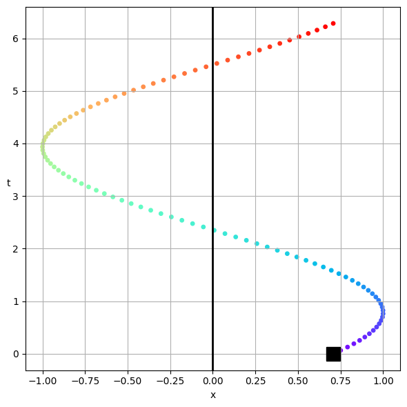
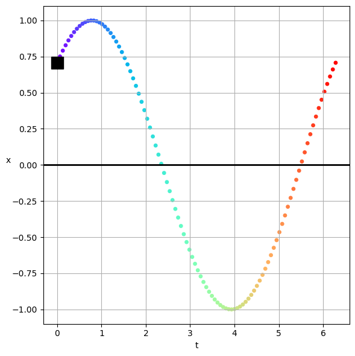

Day 21 - Oscillations#
Belousov–Zhabotinsky reaction \(\rightarrow\)
An example of spatiotemporal patterns

Announcements#
Midterm 1 is being graded
With apologies: What grades are you unable to see right now?
Midterm 1 solutions are posted
Homework 5 is due on Friday
Seminars this week#
MONDAY, October 13, 2025
Condensed Matter Seminar 4:10 pm, 1400 BPS, In Person and Zoom, Host ~ Johannes Pollanen
Speaker: Alex Ruichao Ma, Purdue University Title: Controlling and probing quantum correlations in superconducting circuits
Zoom Link: https://msu.zoom.us/j/93613644939 Meeting ID: 936 1364 4939 Password: CMP
Seminars this week#
TUESDAY, October 14, 2025#
Theory Seminar, 11:00am., FRIB 1200 lab in person and online via Zoom
Speaker: Nadezda Smirnova, CNRS Title: Isospin Symmetry Breaking and Nuclear Beta Decay
Zoom Link: 964 7281 4717 Meeting ID: 48824
Seminars this week#
TUESDAY, October 14, 2025#
Astronomical Horizons, 7;30pm, Abrams Planetarium (no charge to enter) In Person Only. Speaker: Michael Velbel, Professor Emeritus, Earth and Environmental Science Title: “Leopard spots and poppy seeds and samples: The Search for Evidence of Ancient Life on Mars Continues”.
Seminars this week#
WEDNESDAY, October 15, 2025#
Astronomy Seminar, 1:30 pm, 1400 BPS, In Person and Zoom, Host ~ Adina Feinstein
Speaker: Brett Morris, Space Telescope Science Institute
Colloquium Speaker will lead a Software workshop today in this time slot.
Seminars this week#
THURSDAY, October 16, 2025#
Colloquium, 3:30 pm, 1415 BPS, in person and zoom. Host ~ Adina Feinstein
Refreshments and social half-hour in BPS 1400 starting at 3 pm
Speaker: Brett Morris, Space Telescope Science Institute Title: The Stars Behind The Planets
Zoom Link: https://msu.zoom.us/j/94951062663 Password: 2002 Or complete link: https://msu.zoom.us/j/94951062663?pwd=c48uM25P9UsRVuR74rkOioOWgpoxgC.1
Seminars this Week#
FRIDAY, October 17, 2025#
QuIC Seminar, 12:30pm, -1:30pm, 1300 BPS, In Person
Speaker: Chris Baldwin, MSU Title: TBA
Clicker Question 21-1#
My 14 year old asked me to ask you this question.* She has her second physics test tomorrow. 🙏🏽🙏🏽🙏🏽
Just a vibe check. How are the vibes?
The vibes are immaculate.
The vibes are good.
The vibes are okay.
The vibes are not good.
The vibes are terrible.
Reminders#
We were solving nonlinear first order differential equations of the homogenous type
where \(f(x)\) is a nonlinear function of \(x\). We found critical points where \(dx/dt = 0\).
We demonstrated the utility of phase diagrams to visualize the behavior of solutions to nonlinear differential equations.
Reminders#
Example \(\dot{x} = \sin{x}\)#

Reminders#
We showed that we can learn something about systems we know little about at first using this approach (i.e., Firefly synchronization).
\(\mu = 0 \longrightarrow\) Synchronization always (no phase difference)

Reminders#
\(\mu = 0.6 \longrightarrow\) Entrainment is possible (constant phase difference)

Reminders#
\(\mu=1.2 \longrightarrow\) No entrainment (\(\Omega > \omega\)). Stimulus is too fast.

Reminders#
We then moved on to 2D phase spaces, where we had a system of two first order equations:
We focused on the simple harmonic oscillator as an example.
And we graphed it’s phase space diagram.
Reminders#
Phase space diagram for a simple harmonic oscillator. The ellipses are curves of constant energy, \(E\).

Large Angle Pendulum#
In the case of a large angle pendulum, we have a nonlinear differential equation:
Here, we can write this as a system of two first order equations:
We can then plot the phase space diagram for this system.
Phase Diagram for a Large Angle Pendulum#

Clicker Question 21-2#
Consider the phase diagram for a large angle pendulum. What do the upper and lower flows represent?
Unrealistic solutions.
Solutions that are not physical.
Solutions that are physical.
Solutions well beyond small angle.
More than one of these.
Oscillations#
Table Discussion: Why do we see oscillations so frequently in nature?#
Can you think of at least two different reasons from different perspectives?
What are some non-simple harmonic oscillators you can think of?
Click when you and your table are done.
Clicker Question 21-3#
Consider the following notation:
Is this an idea you’ve seen before? How do you feel about it?
Yes, seen it and comfortable with it.
Yes, seen it but not comfortable with it.
No, never seen it, but I can learn it.
There is no option for not learning, sorry.
Visualizing the Complex Solution#
We constructed a solution of the form:
We can plot it in the complex plane and see the real and imaginary parts, and how they change in time.
Visualizing the Complex Solution#
We can plot the solution on the complex plane. For this, \(\delta = \pi/4\), and the amplitude is \(A=1\).
The solution rotates counterclockwise in the complex plane, following the rainbow from violet to red.

Projecting the Real Solution#
The real part is just the projection of the complex solution onto the real axis. Just how far along the real axis is the solution at any given time.
That looks like a time trace, but not quite, it’s the real projection. The colors scheme is the same as before.

The Time Trace of the Solution#
We just flip the axes to produce the time trace that you are used to seeing. The color scheme is the same as before.
